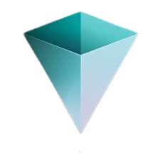
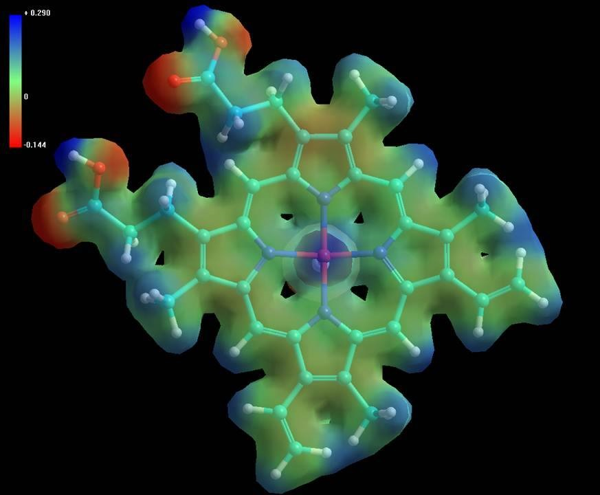
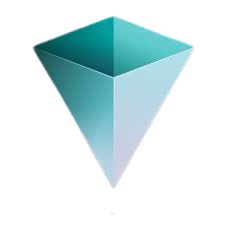
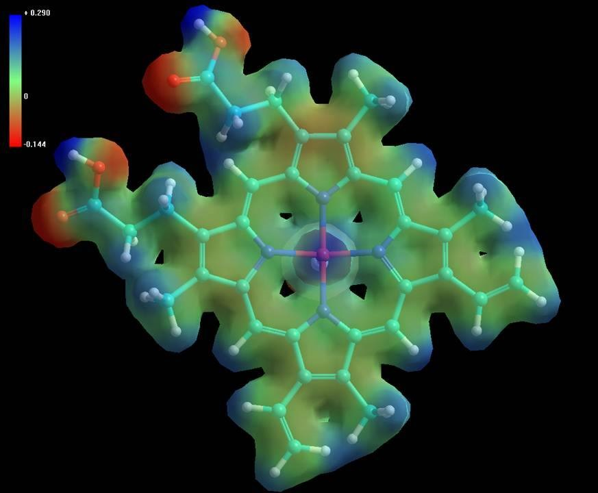
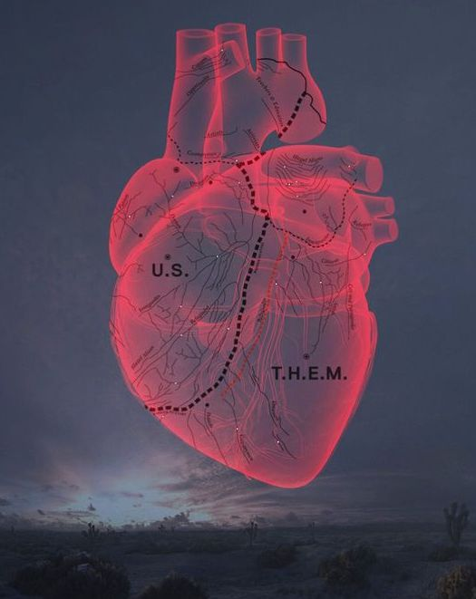
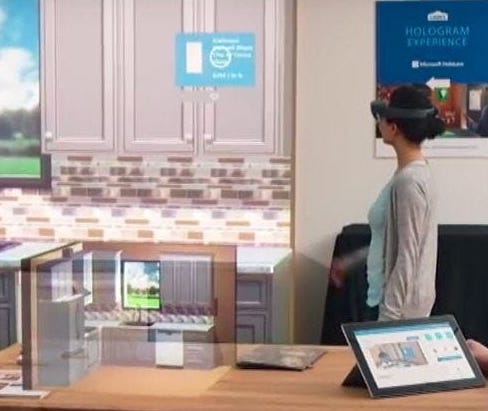
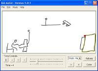
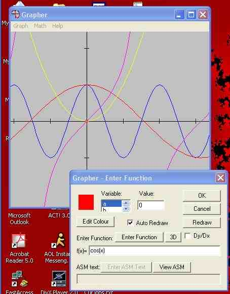

Tesla Staff | Unity Manager |  Verses Director | Lucasfilm/Disney Senior UX |  Microsoft Senior |  Hypercube Lead |
Tesla Staff | Unity Manager |  Verses Director | Lucasfilm/Disney Senior UX | Microsoft Senior |  Hypercube Lead |
 Tesla Autopilot 10.69 Autopilot Visualization Lead |  Tesla Software v11 (2021) UI Core and Autopilot Visualization |  Tesla Model S Plaid (2021) UI Core Framework |  W&G: The Big Fix Up Technical Advisor (room solving by Unity MARS) |  Dr Seuss |  Unity MARS Spatial App StudioEngineering Manager |
VERSES.IO Cofounder and Director of Spatial Standards |  Karuna Labs VR Motion TherapyEngineering Lead | 4D Process Space-Time VisualizationFounder |  Lewcid Systems CEO/Founder -- |
 Vader Immortal: A Star Wars VR Series Prototype/Pre-Production |  Star Wars: Droid Repair Bay Prototype/Pre-Production |  Star Wars: Secrets of the Empire(VOID experience) Prototype/Pre-Production |  Google Seurat Announce Prototype to Production |  CARNE y ARENA Prototype/Pre-Production |
 HoloLens Analog Prototype and Launch Teams |  Windows 10 Holographic Showcases and Holo-Academy Teams |  Holographic MRI for Stanford Surgeons Lead on Prototype to Medical Pilot |  Lowes HoloLens Experience AR Systems and Interfaces |  Excel 2016 - 3D Maps Team Graphics and GPU Lead |  Fragments (HoloLens) Early Gestures and Systems |
Kinect for Xbox 360 Special Thanks |  Zoo Tycoon (Xbox One) Gestures + Systems |  Kinect Star Wars Gestures + Systems |  Kinect Pixar Rush Special Thanks |  Kinect Disneyland Adventures Gestures + Systems |  Kinectimals Gestures + Systems |  Kinect Sports Special Thanks | Kinect Adventures! Kinect Adventures!Special Thanks |
 Forza Motorsport 2 Graphics Engine and Pipeline Engineer |  Alan Wake Special Thanks |  PIX for Windows DirectX/Xbox SDK Developer |  Full House Poker Special Thanks |  Fable II Performance Analysis |  Viva Pinata PC Performance Engineer |
 Hyper Protein Graphics/Bioinformatics Lead | HyperChem 8.0 Graphics |
 Windows Vista / WPF WPF Performance Team Intern |
 Heroine Dawn [web/mobile] | Carnival [web] |  Dice Walker [web] |  Evil Dice 2 Speedy Puzzle Game [win32] | Freed Invasion Quick Strategy Game [win32] |  Quake II AbSIRD Stereogram Engine Mod [win32] |  Evil Dice Puzzle Game Perfection [win32] |  Alarm Clock T-Rex Sound Included [win32] |
 Freed Go [web/mobile] |  Lewdo [web/mobile] |  4D Process [web/mobile] |  Interactive History of Programming [web] | Interval Arithmetic For Visualization [web] |  Classic Win32 Apps [win32] |  Shuzzle The Shadow Puzzle [win32] |  Freed Go Mobius and Layered Go [win32] |  ImpView 3D Implicit Equations [win32] |  VSaber Voxel Carving Tool [win32] |  Ink AniEdTablet PC Ink Animator [tablet pc] |  Lazy Ink Tablet PC Ink Effect [tablet pc] |  Pocket PC Games and Tools [pocket pc] | WirEd and ModEd 3D Modeling Kit [win32] |  Thinking Game 2 Connect 4 in 3D [win32] |  Grapher 2D/3D Equations [win32] |  Crystal Math Visual Symbolic Calculator [win32] |  Teach Linked Lists Programming Education App [win32] |  Towers of Hanoi Classic Recursion Example [win32] |  Crystal Math Console Command Line Tool [win32] |
 Field Hand |  Excel 3D Patent Chart and Query Shapes |  Unity MARS Proxy Forces |  The Spatial Web Book/Patent/White-Paper Contributor | Augmented Reality Contextual Messaging UX |  Augmented Reality Does Two Things |  Motion Augmentation Key Techniques |  ESL Extensible Shading Language | AbSIRD Realtime SIRDS |  Philosophy in Five Easy Pieces by Peter Geselowitz |
 Sculptures |  Second Good Idea |  Hoagie |  The Comet Space Story |
 Energy Work Experiences |  VR Biofield Meditation [web/vr] |  Healer Game Series [web/mobile] |  Biofield Simulation [source_code] |